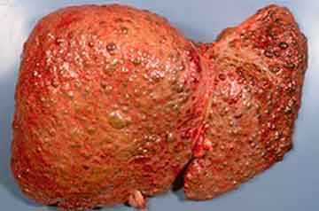
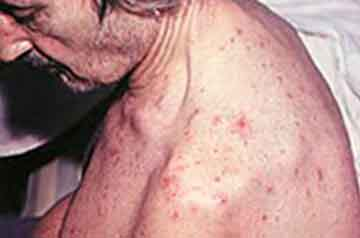
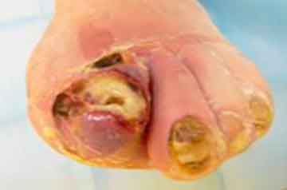
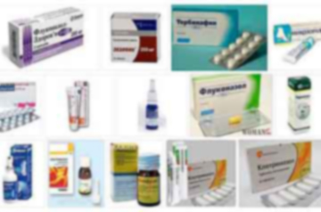

НАУЧЕТЕ УЖАСНАТА ИСТИНА ЗА ГЪБИЧКИТЕ, ДОКАТО НЕ ВИ ИЗРЕЖАТ НОКТИТЕ!
ТЕЗИ „УБИЙЦИ“ СА В СЪСТОЯНИЕ ДА НАПРАВЯТ МНОГО!
От редактора: Според статистиката 33% от жителите на нашата страна страдат от гъбични заболявания по краката и ноктите. Причините за възникването са много различни – от слаб имунитет до неправилно подбрани обувки.
Днес, специалиста в центъра за дерматологични консултации Александър Иванов, ще ви разкаже как съвременните медицински постижения ви позволяват да се отървете от такова опасно и неприятно заболяване като гъбички по краката и ноктите в продължение на един месец у дома.
Александър Иванов
Специалист в Центъра за дерматологични консултации.
Стаж на работа: 27 години.
Д-р Александър Иванов, добър ден! Ще започна с основния въпрос, вярно ли е, че България е лидер в гъбичната инфекция по ноктите?
Да, България заема водеща позиция в класацията за гъбична инфекция. Причината за това е изключително лошата екологична ситуация, нехигиеничните условия на обществените места, бездействието на властите и пренебрежителното отношение на хората.
Д-р Александър Иванов, е колко опасна гъбичната инфекцията на стъпалото и ноктите?
Мнозина смятат, че гъбичките по стъпалата и ноктите е просто козметичен дефект и не представляват особена опасност. Но дали е така? Нека да разберем!
Гъбичките на стъпалата и ноктите или, ако използваме медицинска терминология – онихомикоза, е сериозна заплаха в късните стадии на болестта. Онихомикозата в напредналите случаи може да предизвика алергична реакция, да отслаби имунната система и да доведе до обостряне на хронични заболявания. Това означава, че ако имате някакви хронични заболявания, тогава в случай на развитие на гъбички, вероятността от тяхното обостряне нараства няколко пъти!
Значи, обикновеният проблем със стъпалата и ноктите може да бъде опасен за човешкия живот! В този контекст е необходимо да кажа следното:
Първо, гъбичките не са „прост проблем със стъпалата и ноктите“, а пълноценна паразитна инфекция на организма. Целият проблем с гъбичките по стъпалата и ноктите е свързан с паразити, които са избрали тялото ви като свое пристанище. И второ, самата гъбичка не носи смъртна заплаха, но действа като катализатор за всички болести, които имате.
Грубо казано, ако имате хронични проблеми, например със стомаха или с черния дроб, наличието на гъбички, които удрят по автоимунната система на тялото, автоматично увеличават вероятността всички тези болести от категорията на хронични да се превърнат в остри.
КАКВИ СА ПОСЛЕДСТВИЯТА, АКО НЕ БОРИТЕ С ГЪБИЧКИТЕ?
При хора над 30-годишна възраст гъбичната инфекция е една от основните причини за чести настинки, бронхиална астма, нарушаване на работата на вътрешните органи. В тази възраст инфекцията на ноктите може да доведе до дерматит по целия долен крайник. Ето защо не трябва да отлагате възстановяването на гъбичките. Напреднало заболяване води до напълно дистрофична форма на онихомикоза, която причинява усложнения опаснити за живота.
А СЕГА НАЙ-ВАЖНОТО...
В процеса на жизнената дейност гъбичките произвеждат токсини: ксантомагнин, пеницилин, виомелин и други антибиотични вещества. Попадайки в тялото, тези токсини причиняват тежки соматични заболявания. За по-голяма яснота разгледайте снимките (Внимание! 18+)
Токсидермия: Поражение на гърба и ръцете

Синдром на Lyell (токсична епидермална некролиза, 80% от случаите
водят до смърт)
 
Ако не предприемете мерки в ранните етапи на инфекцията, гъбичките заедно с кръвта се разпространяват във вътрешните органи и на фона на отслабения имунитет провокират развитието на инфекциозни усложнения: токсично-алергични поражения на сърцето, черния дроб, коремните органи, бъбреците.
Ако не предприемете необходимите мерки навреме, вероятността от смъртоносен изход е 95%.
Ако не започнете да премахвате гъбичките на ранен етап, след няколко години те напълно унищожават структурата на нокътната плоча и водят до нейната загуба.
Последици от гъбичките на нокътната плоча на палеца

При част от пациентите той е на ранен стадий на развитие и лесно се унищожава, като при останалата част вече се развива достатъчно силно, така че възстановяването ще отнеме известно време. Проблемът е, че не всеки незабавно търси помощ. Много хора мислят, че гъбичките по някаква причина ще изчезнат по магически начин и всичко ще се нареди. Всъщност паразитите няма да изчезнат никъде сами. И ако не се предприемат мерки – гъбичките ще се разпространяват, като поразят целия крак и ноктите.
Можете да срещнете следните съвети – отървете от гъбичките по ноктите по следния начин: „нанесете на ноктите 2% оцет и след това капка обикновен водороден пероксид“. Това е пълна глупост. Ако си направите такава процедура, само ще влошите нещата, тъй като ще създадете алкална среда, благоприятна за разпространението на гъбичната мрежа дълбоко в организма. Ето защо е важно да знаете следното:
В АПТЕКИТЕ НЕ СЕ ПРОДАВАТ СРЕДСТВА СРЕЩУ ГЪБИЧКИ!

1 вариант – Системни препарати
Ще ви кажа истината за всички препарати, предписани от специалисти, за които харчите купища пари, но ВСИЧКО ТОВА НЯМА НИКАКЪВ РЕЗУЛТАТ. Те просто скриват симптомите или временно ги правят „заспали“, но след известно време болестта продължава да напредва отново! Има и възможни нежелани реакции: възпаление на кожата, потене, алергия.
2 вариант – Капки и лакове
От тези препарати, тези, които ги използват, често получават УЖАСНА АЛЕРГИЯ. Това е често срещано явление, защото токсикологичното отравяне на тялото започва веднага след прилагането на противогъбичен агент в областта на кожата. Просто някой е по-чувствителен, някой не.
С КАКВО ТРЯБВА ДА СЕ ПЕРМАХВАТ ГЪБИЧКИТЕ ПО НОКТИТЕ И СТЪПАЛАТА?
За да премахнете гъбичките, трябва да убиете спорите им и да спрете разпространението на гъбичната инфекция по тялото. Доскоро препааратите, които биха могли да направят това, не съществуваха. Всяко средство срещу гъбички имаше само временно козметично действие. Едва през 2019 г. нашият институт разработи препарат, който „купира“ спорите на гъбичките, т.е. лишава ги от възможността да се възпроизвеждат. Продуктът се нарича и е противогъбичен спрей с масло от чаено дърво. За разлика от други кремове, формулата на течен спрей прониква дълбоко под кожата или в ноктите и убива гъбичките.
Около 16 960 часа изследвания и около 3 млн. долара бяха изразходвани за производството на този продукт, който Асоциацията отдели специално за разработване на ефективно противогъбично средство. Учените изпробваха много формули, преди да се спрат на възстановителните му свойства.
1. Ефективността на , изчислена по стандартния метод (броят на
възстановените хората от общия брой пациенти в група от 100 души, подложени на курса за
възстановяване) е:
– Премахване на гъбичките по ноктите – 99.3%
– Премахване на гъбичките по стъпалата – 99.7%
– Почистване на кожата на краката – 95%.
– Отстраняване на миризмата на краката и ноктите – 100%.
– Премахва изпотяването на краката – 90%.
Възстановяването в този случай означава премахване на гъбичките и
свързаните с тях заболявания, както и липсата на рецидив в продължение на една
година.
2. Няма нежелани странични ефекти, включително не предизвиква алергични реакции.
3. е признат за водещ
препарат в борбата срещу гъбичките по стъпалата и
ноктите.
Д-р Александър Иванов, може би искате да кажете нещо на нашите читатели, преди да приключим интервюто?
Единственото нещо, което бих искал да кажа, това, че ГЪБИЧКИТЕ по краката и ноктите не са само козметичен дефект, а по-скоро сериозно заболяване, което може да доведе до най-сериозни последици. И най-добре е да се погрижите за това, докато не стане твърде късно.
– можете да получите от официалния уебсайт на производителя.


Ангеле, като започнете възстановяването, напишете ми, тъй като събираме статистически данни, които биха могли да ни позволят да изкараме средството на пазара в аптеките на достъпни цени, без допълнителни надценки.
Поздрави, Александър